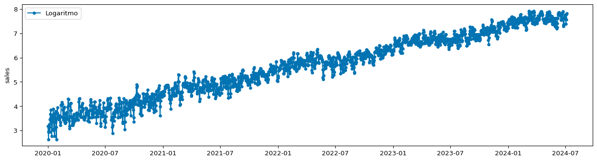
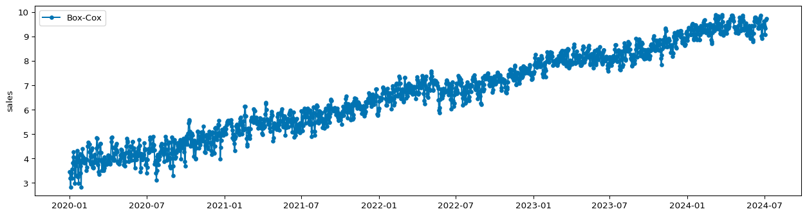
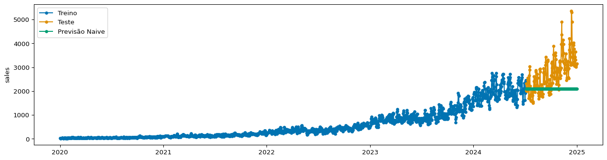
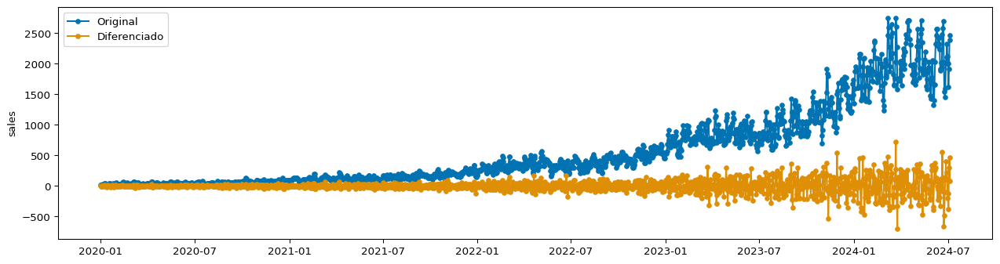
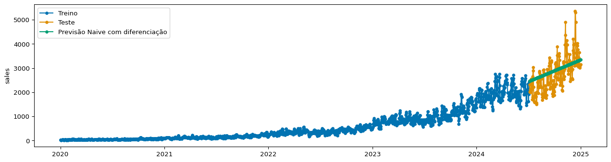

from tsbook.datasets.retail import SyntheticRetail
from sktime.utils.plotting import plot_series
dataset = SyntheticRetail("univariate")
y_train, y_test = dataset.load("y_train", "y_test")
plot_series(y_train, y_test, labels=["Treino", "Teste"])3 Modelos estatísticos clássicos e diferenciação
Nesse capítulo, vamos começar a usar um dataset mais realista, com dados simulando vendas diárias de uma empresa de varejo.
Vamos aprender os seguintes pontos:
- Definição de séries integradas, e uso de diferenciação
- Modelos estatísticos clássicos: modelos de suavização exponencial e modelos autoregressivos (AR)
- Como usar esses modelos com a biblioteca
sktime
3.1 Importando dados
Para acessar os dados, vamos usar a classe SyntheticRetail da biblioteca tsbook, que contém dados simulados de vendas diárias de uma empresa de varejo.
Os dados são diários, e vemos que sempre positivos. Também notamos que existe alguma sazonalidade, aparentemente algo mensal e anual, que aumenta de magnitude ao longo do tempo.
Algo que deve chamar a atenção nesse gráfico é que a magnitude da série temporal está aumentando ao longo do tempo. Isso não deve passar desapercebido, pois é um ponto importante para entendermos o que vem a seguir.
3.2 Componentes de séries temporais
Séries temporais podem ser decompostas em 3 componentes principais:
- Tendência: padrão de longo prazo na série temporal
- Sazonalidade: padrões que se repetem em intervalos regulares, como diariamente, semanalmente ou anualmente
- Ruído: variação aleatória que não pode ser explicada pelos outros componentes
Uma série aditiva pode ser representada como:
\[ Y(t) = T(t) + S(t) + R(t) \]
onde \(T(t)\) é a tendência, \(S(t)\) é a sazonalidade, e \(R(t)\) é o ruído.
Em séries aditivas, o impacto da sazonalidade se dá em termos absolutos, dizemos: “em janeiro, as vendas aumentam em 100 unidades com relação a média do ano”.
Mas também existem séries multiplicativas, onde os componentes interagem de forma diferente:
\[ Y(t) = T(t) \cdot S(t) \cdot R(t) \]
Nessas séries, o impacto da sazonalidade se dá em termos relativos, dizemos: “em janeiro, as vendas aumentam em 20% com relação a média do ano”. Esse é o caso mais comum para séries não-negativas, como vendas. Isso vem por definição: se temos vendas muito baixas, por exemplo, 10 unidades, não faz sentido dizer que em janeiro as vendas diminuem em 100 unidades, pois isso levaria a vendas negativas. Já dizer que as vendas diminuem em 20% é perfeitamente razoável.
Tip
Em alguns casos, as séries multiplicativas são definidas como:
\[ Y(t) = T(t) + T(t) \cdot S(t) + T(t) \cdot R(t) \]
Quando a série é multiplicativa, podemos fazer recurso ao logaritmo para transformá-la em aditiva:
\[ log(Y(t)) = log(T(t)) + log(S(t)) + log(R(t)) \]
Para fazer isso no sktime, usamos o transformador LogTransformer. Transformadores são usados para pré-processar ou pós-processar os dados antes de aplicar um modelo de previsão, e sua interface é similar a dos modelos de previsão:
__init__: define os hiperparâmetros do transformadorfit: aprende os parâmetros do transformador a partir dos dadostransform: aplica a transformação nos dadosinverse_transform(opcional): aplica a transformação inversa nos dados
from sktime.transformations.series.boxcox import LogTransformer
log_transformer = LogTransformer()
log_transformer.fit(y_train)LogTransformer()Please rerun this cell to show the HTML repr or trust the notebook.
LogTransformer()
y_train_log = log_transformer.transform(y_train)
plot_series(y_train_log, labels=["Logaritmo"])
Existem casos que as séries não são nem aditivas nem multiplicativas. Nesses casos, podemos usar transformações como Box-Cox estabilizar a variância da série temporal. Essas transformações são mais gerais que o logaritmo, e podem ser aplicadas em séries com valores negativos (Yeo-Johnson).
from sktime.transformations.series.boxcox import BoxCoxTransformer
boxcox_transformer = BoxCoxTransformer()
boxcox_transformer.fit(y_train)BoxCoxTransformer()Please rerun this cell to show the HTML repr or trust the notebook.
BoxCoxTransformer()
y_train_boxcox = boxcox_transformer.transform(y_train)
plot_series(y_train_boxcox, labels=["Box-Cox"])
3.3 Séries estacionárias
O conceito de estacionariedade é fundamental em séries temporais. Uma série temporal é dita estacionária se suas propriedades estatísticas, como média, variância e autocovariância, são constantes ao longo do tempo, não importando a janela e quando ela é observada.
Mais precisamente, se \(Y(t)\), onde \(t\) é o indice temporal, então dizemos que ela é estacionária se:
\[ P(Y(t_{start}:t_{end})) = P(Y(t_{start}+k:t_{end}+k)), \quad \forall k, t_{start}, t_{end} \in \mathbb{Z} \]
Claramente, a série temporal que estamos analisando não é estacionária. Basta percebermos que para valores maiores de \(t\), a média e a variância são maiores.
O aumento da média da série ao longo do tempo é chamado de tendência. A tendência é um padrão de longo prazo na série temporal, e um grande desafio para previsões de longo prazo.
Existem definições mais “suaves” de estacionariedade, como a estacionariedade fraca, que requer apenas que propriedades como média e autovariância sejam constantes ao longo do tempo.
No fundo, o que nos interessa mais é ter uma série temporal que seja “fácil”de modelar. Para alguns algoritmos, como Naive, é importante que ela seja o mais próxima possível de estacionária. Veja abaixo o problema geraodo quando aplicamos o modelo Naive diretamente na série temporal original.
from sktime.forecasting.naive import NaiveForecaster
naive = NaiveForecaster(strategy="mean", window_length=24)
naive.fit(y_train)
y_pred = naive.predict(fh=y_test.index)
plot_series(y_train, y_test, y_pred, labels=["Treino", "Teste", "Previsão Naive"])
3.3.1 Diferenciação
Uma técnica simples e eficaz para lidar com séries não estacionárias é a diferenciação. Calculamos:
\[ Y'(t) = Y(t) - Y(t-1) \]
e fazemos previsões em \(Y'(t)\) ao invés de \(Y(t)\). Para obter a previsão de \(Y(t)\), precisamos fazer o processo inverso: somar a previsão de \(Y'(t)\) com o valor anterior de \(Y(t-1)\).
\[ \hat{Y(t)} = \hat{Y'}(t) + \hat{Y}(t-1), \quad \hat{Y}(0) \text{ conhecido} \]
Com sktime, isso é extremamente fácil. Aqui, vamos usar um transformador chamado Differencer. Transformadores fazem alterações nos dados, mas não fazem previsões. Eles são usados para pré-processar ou pós processar os dados antes de aplicar um modelo de previsão.
from sktime.transformations.series.difference import Differencer
diff = Differencer()
diff.fit(y_train)Differencer()Please rerun this cell to show the HTML repr or trust the notebook.
Differencer()
y_train_diff = diff.transform(y_train)
plot_series(y_train, y_train_diff, labels=["Original", "Diferenciado"])
3.4 Criando um pipeline com diferenciação e Naive
Agora, podemos criar um modelo de forecasting mais complexo, composto por dois passos:
- Diferenciação dos dados
- Modelo Naive aplicado nos dados diferenciados
Para isso, usamos a classe TransformedTargetForecaster, que cria um pipeline de transformadores e um modelo de previsão.
from sktime.forecasting.compose import TransformedTargetForecaster
model = TransformedTargetForecaster(steps=[
("differencer", Differencer()),
("naive", NaiveForecaster(strategy="mean", window_length=24))
])
model.fit(y_train)TransformedTargetForecaster(steps=[('differencer', Differencer()),
('naive',
NaiveForecaster(strategy='mean',
window_length=24))])Please rerun this cell to show the HTML repr or trust the notebook.TransformedTargetForecaster(steps=[('differencer', Differencer()),
('naive',
NaiveForecaster(strategy='mean',
window_length=24))])Differencer()
NaiveForecaster(strategy='mean', window_length=24)
Ou apenas:
model = Differencer() * NaiveForecaster(strategy="mean", window_length=24)
model.fit(y_train)TransformedTargetForecaster(steps=[Differencer(),
NaiveForecaster(strategy='mean',
window_length=24)])Please rerun this cell to show the HTML repr or trust the notebook.TransformedTargetForecaster(steps=[Differencer(),
NaiveForecaster(strategy='mean',
window_length=24)])Differencer()
NaiveForecaster(strategy='mean', window_length=24)
E agora podemos prever:
y_pred = model.predict(fh=y_test.index)
plot_series(y_train, y_test, y_pred, labels=["Treino", "Teste", "Previsão Naive com diferenciação"])
Existem ainda alguns problemas com a diferenciação. Note que a variância da série temporal diferenciada não é constante ao longo do tempo. Vamos ver na próxima seção como lidar com isso.